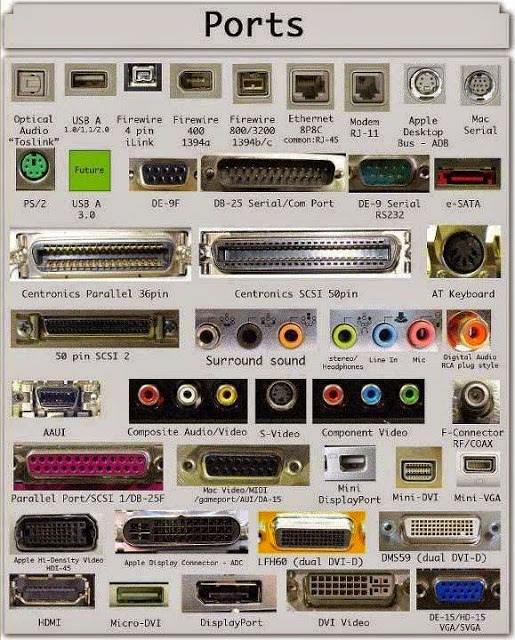

ما هو الواي فاي وكيف يعمل؟
بقلم: مارشال برين وتالون هومر | تاريخ التحديث: ٢٦ فبراير ٢٠٢٤في الماضي، لم تكن شبكة الواي فاي متوفرة إلا في بعض المطارات أو المقاهي أو الفنادق. أما اليوم، فقد أصبح الاتصال اللاسلكي بالإنترنت، المعروف أيضًا باسم واي فاي أو شبكات 802.11، متوفرًا في كل منزل وشركة تقريبًا. كما تستخدم العديد من المدن هذه التقنية لتوفير خدمة إنترنت مجانية أو منخفضة التكلفة لسكانها.
للواي فاي مزايا عديدة. فالشبكات اللاسلكية سهلة الإعداد وغير مكلفة. كما أنها غير مزعجة - إلا إذا كنت تبحث عن مكان لمشاهدة الأفلام عبر الإنترنت على جهازك اللوحي، فقد لا تلاحظ وجودك في نقطة اتصال. في هذه المقالة، سنتناول التقنية التي تسمح بنقل المعلومات لاسلكيًا. وسنستعرض أيضًا ما يلزم لإنشاء شبكة لاسلكية في منزلك.
أولاً، دعونا نلقي نظرة على بعض أساسيات WiFi.
التفاصيل كاملة في محتويات المنشور
محتويات المنشور الكاملة:
تستخدم الشبكة اللاسلكية موجات الراديو ، تمامًا كما تفعل الهواتف المحمولة وأجهزة التلفزيون والراديو. في الواقع، يُشبه الاتصال عبر شبكة لاسلكية إلى حد كبير الاتصال اللاسلكي ثنائي الاتجاه. إليك ما يحدث:
- يقوم المحول اللاسلكي للكمبيوتر بترجمة البيانات إلى إشارة راديو وإرسالها باستخدام هوائي.
- يستقبل جهاز التوجيه اللاسلكي الإشارة ويفك تشفيرها. ثم يرسل المعلومات إلى الإنترنت عبر اتصال إيثرنت سلكي فعلي.
وتعمل هذه العملية أيضًا في الاتجاه المعاكس، حيث يستقبل جهاز التوجيه المعلومات من الإنترنت، ويترجمها إلى إشارة راديو، ثم يرسلها إلى المحول اللاسلكي الخاص بالكمبيوتر.
تُشبه أجهزة الراديو المُستخدمة في اتصالات الواي فاي إلى حد كبير أجهزة الراديو المُستخدمة في أجهزة اللاسلكي والهواتف المحمولة وغيرها من الأجهزة. فهي قادرة على إرسال واستقبال موجات الراديو، وتحويل الأصفار والواحدات إلى موجات راديو، ثم تحويلها مرة أخرى إلى الأصفار والواحدات. إلا أن أجهزة الراديو المُستخدمة في الواي فاي تتميز ببعض الاختلافات الملحوظة عن غيرها من الأجهزة:
- تُبثّ هذه الأجهزة بترددات 2.4 جيجاهرتز أو 5 جيجاهرتز. هذا التردد أعلى بكثير من الترددات المستخدمة في الهواتف المحمولة وأجهزة اللاسلكي والتلفزيونات. يسمح هذا التردد الأعلى للإشارة بحمل بيانات أكثر.
- تُعتبر اتصالات 2.4 جيجاهرتز الآن قديمة بعض الشيء نظرًا لسرعاتها المنخفضة في نقل البيانات مقارنةً بـ 5 جيجاهرتز. مع ذلك، لا يزال نطاق 2.4 قيد الاستخدام، إذ يُمكن لهذا التردد المنخفض نقل البيانات لمسافة تصل إلى مئات الأقدام . في الظروف المثالية، يبلغ أقصى مدى لنطاق 5 جيجاهرتز حوالي 200 قدم (61 مترًا)، ولكنه في الواقع أكثر عرضة للتداخل من الجدران والأبواب والأشياء الأخرى. قد يكون نطاق 2.4 أسرع لمستخدم متصل بجهاز توجيه على بُعد عدة غرف، بينما سيكون نطاق 5 جيجاهرتز أسرع بالتأكيد للاتصالات القريبة.
تستخدم تقنية WiFi معايير الشبكات 802.11، والتي تأتي بأشكال مختلفة وتطورت على مر العقود:
يُعد معيار 802.11b (الذي طُرح عام 1999) أبطأ معيار وأقلها تكلفة. لفترة من الوقت، ساهمت تكلفته في انتشاره، ولكنه الآن أقل شيوعًا مع انخفاض تكلفة المعايير الأسرع. يُرسل معيار 802.11b في نطاق التردد 2.4 جيجاهرتز من الطيف الراديوي. يمكنه معالجة ما يصل إلى 11 ميجابت في الثانية، ويستخدم تعديل التشفير التكميلي (CCK) لتحسين السرعات.
يُرسِل معيار 802.11a (الذي طُرِحَ بعد 802.11b) بتردد 5 جيجاهرتز، ويُمكِنه نقل ما يصل إلى 54 ميجابت من البيانات في الثانية. ويستخدم تقنية الإرسال المتعدد بتقسيم التردد المتعامد (OFDM)، وهي تقنية ترميز أكثر كفاءة تُقسِّم إشارة الراديو إلى عدة إشارات فرعية قبل وصولها إلى جهاز الاستقبال. وهذا يُقلِّل التداخل بشكل كبير.
ينقل 802.11g البيانات بسرعة 2.4 جيجاهرتز مثل 802.11b، ولكنه أسرع كثيرًا - يمكنه التعامل مع ما يصل إلى 54 ميجابت من البيانات في الثانية. 802.11g أسرع لأنه يستخدم نفس ترميز OFDM مثل 802.11a.
معيار 802.11n (الذي طُرح عام 2009) متوافق مع الإصدارات السابقة من بروتوكولات a وb وg. وقد حسّن السرعة والمدى بشكل ملحوظ مقارنةً بسابقاته. على سبيل المثال، على الرغم من أن معيار 802.11g ينقل نظريًا 54 ميجابت من البيانات في الثانية، إلا أنه لا يحقق سرعات فعلية تتجاوز 24 ميجابت في الثانية بسبب ازدحام الشبكة. مع ذلك، يُقال إن معيار 802.11n يمكنه تحقيق سرعات تصل إلى 140 ميجابت في الثانية. يستطيع معيار 802.11n نقل ما يصل إلى أربعة تدفقات بيانات، بحد أقصى 150 ميجابت في الثانية لكل منها، لكن معظم أجهزة التوجيه لا تسمح إلا بتدفقين أو ثلاثة تدفقات.
ظهر 802.11ac على الساحة حوالي عام 2014، ويعمل حصريًا بتردد 5 جيجاهرتز. 802.11ac متوافق مع الإصدارات السابقة من 802.11n (وبالتالي مع الإصدارات الأخرى أيضًا)، مع n على نطاق 2.4 جيجاهرتز وac على نطاق 5 جيجاهرتز. إنه أقل عرضة للتداخل وأسرع بكثير من سابقاته، حيث يدفع بحد أقصى 450 ميجابت في الثانية على تيار واحد، على الرغم من أن السرعات في العالم الحقيقي قد تكون أقل. ومثل 802.11n، فإنه يسمح بالإرسال على تيارات مكانية متعددة - ما يصل إلى ثمانية، اختياريًا. يُطلق عليه أحيانًا اسم 5G بسبب نطاق تردده، وأحيانًا Gigabit WiFi بسبب قدرته على تجاوز جيجابت في الثانية على تيارات متعددة وأحيانًا أخرى Very High Throughput (VHT) لنفس السبب.
ظهر معيار 802.11ax ، المعروف أيضًا باسم WiFi 6، في قطاع الاتصالات عام 2019. يُوسّع هذا المعيار إمكانيات معيار 802.11ac بعدة طرق رئيسية. أولًا، تتيح أجهزة التوجيه الجديدة معدل تدفق بيانات أعلى، يصل إلى 9.2 جيجابت في الثانية. كما يُتيح WiFi 6 للمُصنّعين تركيب عدد أكبر من الهوائيات على جهاز توجيه واحد، ما يسمح بقبول اتصالات متعددة في آنٍ واحد دون أي قلق من التداخل أو تباطؤ الأداء. تتصل بعض الأجهزة الجديدة أيضًا بنطاق 6 جيجاهرتز أعلى، وهو أسرع بنحو 20% من 5 جيجاهرتز في الظروف المثالية.
بدأت تقنية 802.11be (أو WiFi 7 ) في الظهور في عام 2024، حيث تقدم نطاقًا أفضل ومزيدًا من الاتصالات ومعدلات بيانات أسرع من أي من الإصدارات السابقة.
تركز معايير 802.11 الأخرى على تطبيقات محددة للشبكات اللاسلكية، مثل شبكات المنطقة الواسعة (WAN) داخل المركبات أو التكنولوجيا التي تتيح لك الانتقال من شبكة لاسلكية إلى أخرى بسلاسة.
يمكن لأجهزة راديو الواي فاي البث على أي نطاق ترددي، أو يمكنها التنقل بسرعة بين النطاقات المختلفة. يساعد التنقل الترددي على تقليل التداخل، ويتيح لأجهزة متعددة استخدام نفس الاتصال اللاسلكي في آنٍ واحد.
طالما أن جميع الأجهزة مزودة بمحولات لاسلكية، يمكن لعدة أجهزة استخدام جهاز توجيه واحد للاتصال بالإنترنت. هذا الاتصال سهل الاستخدام، وغير مرئي تقريبًا، وموثوق به إلى حد ما؛ ومع ذلك، في حال تعطل جهاز التوجيه أو محاولة عدد كبير من المستخدمين استخدام تطبيقات عالية النطاق الترددي في الوقت نفسه، فقد يواجه المستخدمون تداخلًا أو انقطاعًا في الاتصال، مع أن المعايير الأحدث والأسرع مثل 802.11ax ستساعد في ذلك.
بعد ذلك، سننظر في كيفية الاتصال بالإنترنت من نقطة اتصال WiFi.
أسماء أخرى ومعايير أخرى للشبكات اللاسلكية
من المفاهيم الخاطئة الشائعة أن "واي فاي" اختصار لـ "دقة الاتصال اللاسلكي"، لكن المصطلح في الواقع مستوحى من معايير الشبكات 802.11. يُطلق معهد مهندسي الكهرباء والإلكترونيات (IEEE) على هذا المعيار . يضع هذا المعهد معايير لمجموعة من البروتوكولات التكنولوجية، ويستخدم نظام ترقيم لتصنيف هذه المعايير.

نقطة اتصال واي فاي هي ببساطة منطقة مزودة بشبكة لاسلكية متاحة. يُستخدم هذا المصطلح غالبًا للإشارة إلى الشبكات اللاسلكية في الأماكن العامة كالمطارات والمقاهي. بعضها مجاني وبعضها الآخر يتطلب رسومًا، ولكنها في كلتا الحالتين مفيدة أثناء التنقل. يمكنك حتى إنشاء نقطة اتصال واي فاي خاصة بك باستخدام هاتف محمول أو جهاز خارجي متصل بشبكة خلوية. ويمكنك أيضًا إعداد شبكة واي فاي في منزلك عبر مزودي خدمة الإنترنت.
إذا كنت ترغب في الاستفادة من شبكات واي فاي العامة أو شبكتك المنزلية، فإن أول ما عليك فعله هو التأكد من أن جهاز الكمبيوتر لديك مزود بالمعدات المناسبة. تأتي معظم أجهزة الكمبيوتر المحمولة الجديدة ، والعديد من أجهزة الكمبيوتر المكتبية الجديدة، مزودة بأجهزة إرسال لاسلكية مدمجة، وجميع الأجهزة المحمولة تقريبًا تدعم تقنية واي فاي. إذا لم يكن جهاز الكمبيوتر لديك مزودًا بها بالفعل، يمكنك شراء محول لاسلكي يُوصل بمنفذ بطاقة الشبكة أو منفذ USB . يمكن لأجهزة الكمبيوتر المكتبية استخدام محولات USB، أو شراء محول يُوصل بمنفذ PCI داخل هيكل الجهاز. يمكن للعديد من هذه المحولات استخدام أكثر من معيار 802.11.
بمجرد تثبيت محول لاسلكي وبرامج التشغيل التي تسمح بتشغيله، سيتمكن جهاز الكمبيوتر الخاص بك من اكتشاف الشبكات الموجودة تلقائيًا. هذا يعني أنه عند تشغيل جهاز الكمبيوتر في نقطة اتصال واي فاي، سيُعلمك الجهاز بوجود الشبكة ويسألك عما إذا كنت ترغب في الاتصال بها. إذا كان لديك جهاز كمبيوتر قديم، فقد تحتاج إلى استخدام برنامج لاكتشاف الشبكات اللاسلكية والاتصال بها.
يُعدّ الحصول على اتصال واي فاي في الأماكن العامة أمرًا مريحًا للغاية. كما تُعدّ الشبكات المنزلية اللاسلكية مريحة أيضًا، إذ تُتيح لك توصيل عدة أجهزة كمبيوتر وأجهزة لاسلكية أخرى بسهولة، ونقلها من مكان لآخر دون الحاجة إلى فصل الأسلاك وإعادة توصيلها. في القسم التالي، سنتناول كيفية إنشاء شبكة لاسلكية في منزلك.

إذا كان لديك بالفعل عدة أجهزة كمبيوتر متصلة بشبكة في منزلك، يمكنك إنشاء شبكة لاسلكية باستخدام نقطة وصول لاسلكية. أما إذا كان لديك عدة أجهزة كمبيوتر غير متصلة بشبكة، أو إذا كنت ترغب في استبدال شبكة إيثرنت ، فستحتاج إلى جهاز توجيه لاسلكي. وهو جهاز واحد يحتوي على:
- منفذ للاتصال بكابل أو مودم DSL
- جهاز التوجيه ، المعروف أيضًا باسم شبكة المنطقة المحلية اللاسلكية (WLAN)
- مركز إيثرنت
- جدار الحماية
- نقطة وصول لاسلكية
يتيح لك جهاز التوجيه اللاسلكي استخدام الإشارات اللاسلكية أو كابلات الإيثرنت لتوصيل أجهزة الكمبيوتر والأجهزة المحمولة ببعضها البعض، وبالطابعات ، وبالإنترنت . توفر معظم أجهزة التوجيه تغطية لمسافة 30.5 مترًا تقريبًا في جميع الاتجاهات، مع أن الجدران والأبواب قد تحجب الإشارة. إذا كان منزلك كبيرًا جدًا، يمكنك شراء موسعات أو مكررات نطاق رخيصة لزيادة نطاق جهاز التوجيه.
كما هو الحال مع محولات الشبكة اللاسلكية، يمكن للعديد من أجهزة التوجيه استخدام أكثر من معيار 802.11. عادةً، تكون أجهزة توجيه 802.11n أقل تكلفةً بقليل من غيرها، ولكن نظرًا لقدم المعيار، فهي أبطأ أيضًا من 802.11ac أو 802.11ax.
بمجرد توصيل جهاز التوجيه، سيبدأ العمل بإعداداته الافتراضية. تتيح لك معظم أجهزة التوجيه استخدام واجهة ويب لتغيير إعداداتك. يمكنك اختيار:
- اسم الشبكة، المعروف باسم مُعرِّف مجموعة خدماتها (SSID). الإعداد الافتراضي هو عادةً اسم الشركة المُصنِّعة.
- القناة التي يستخدمها جهاز التوجيه. تستخدم معظم أجهزة التوجيه القناة 6 افتراضيًا. إذا كنت تعيش في شقة وجيرانك يستخدمون القناة 6 أيضًا، فقد تواجه تداخلًا. يُفترض أن يُحل التغيير إلى قناة أخرى المشكلة.
- خيارات أمان جهاز التوجيه الخاص بك. تستخدم العديد من أجهزة التوجيه تسجيل دخول قياسيًا متاحًا للعامة، لذا يُنصح بتعيين اسم مستخدم وكلمة مرور خاصين بك.
يُعدّ الأمان جزءًا أساسيًا من شبكة الواي فاي المنزلية، وكذلك نقاط اتصال الواي فاي العامة. إذا ضبطتَ جهاز التوجيه الخاص بك لإنشاء نقطة اتصال مفتوحة، فسيتمكن أي شخص لديه بطاقة لاسلكية من استخدام إشارتك. مع ذلك، يُفضّل معظم الناس إبعاد الغرباء عن شبكتهم. يتطلب ذلك اتخاذ بعض الاحتياطات الأمنية.
من المهم أيضًا التأكد من تحديث احتياطات الأمان لديك. كان معيار أمان الخصوصية المكافئة للشبكات السلكية (WEP) هو المعيار القياسي لأمان شبكات WAN.
كانت الفكرة وراء بروتوكول WEP إنشاء منصة أمان لاسلكية تجعل أي شبكة لاسلكية آمنة تمامًا كالشبكات السلكية التقليدية. لكن المتسللين اكتشفوا ثغرات في نهج WEP، واليوم أصبح من السهل العثور على تطبيقات وبرامج قد تُعرّض شبكات WAN التي تعمل ببروتوكول WEP للخطر. وقد تلا ذلك الإصدار الأول من بروتوكول WiFi Protected Access (WPA)، الذي يستخدم تشفير بروتوكول سلامة المفتاح الزمني (TKIP)، وهو نسخة مطورة من WEP، ولكنه لم يعد يُعتبر آمنًا .
للحفاظ على خصوصية شبكتك، يمكنك استخدام طريقة واحدة أو أكثر من الطرق التالية:
- الوصول المحمي بالواي فاي الإصدار 2 (WPA2) هو خليفة WEP وWPA، وهو الآن معيار الأمان المُوصى به لشبكات الواي فاي. يستخدم إما تشفير TKIP أو معيار التشفير المتقدم (AES)، حسب اختيارك عند الإعداد. يُعتبر AES الأكثر أمانًا. وكما هو الحال مع WEP وWPA الأصلي، يتضمن أمان WPA2 تسجيل الدخول بكلمة مرور. نقاط الاتصال العامة إما مفتوحة أو تستخدم أيًا من بروتوكولات الأمان المتاحة، بما في ذلك WEP، لذا توخَّ الحذر عند الاتصال خارج المنزل. يبدو أن إعداد الواي فاي المحمي (WPS)، وهي ميزة تربط رقم تعريف شخصي (PIN) ثابتًا بجهاز التوجيه وتُسهّل عملية الإعداد، تُنشئ ثغرة أمنية يُمكن للمخترقين استغلالها، لذا يُنصح بإيقاف تشغيل WPS إن أمكن، أو البحث عن أجهزة توجيه لا تحتوي على هذه الميزة.
- أُطلق بروتوكول WPA3 عام ٢٠١٨ وأصبح معيار الأمان اعتبارًا من عام ٢٠٢٠. ويهدف إلى حلّ بعض ثغرات WPA2 من خلال تطبيق تشفير أكثر تعقيدًا على كلٍّ من جهاز التوجيه وجهاز العميل. ويتغير هذا التشفير بمرور الوقت، مما يعني أنه إذا تمكن أحد المخترقين من الوصول إلى اتصال غير مصرح به في وقت ما، فسيتم حظره مرة أخرى في المرة التالية التي يحاول فيها الاتصال. كما يمكن للأجهزة المزوّدة ببروتوكول WPA3 إضافة بعض التشفير من جانب العميل أثناء استخدام الشبكات العامة المفتوحة.
- تجدر الإشارة إلى أنه مهما بلغت درجة أمان الشبكة اللاسلكية، فمن المؤكد أنها ستحتوي على طرق استغلال يمكن للمخترقين استخدامها. عندما يتعلق الأمر ببيانات حكومية أو مؤسسية حساسة، يُعد الاتصال السلكي البسيط الخيار الأكثر أمانًا. للوصول إلى شبكة لاسلكية أو التجسس عليها، يجب أن يكون المخترق ضمن نطاق جهاز التوجيه، لذا من غير المرجح حدوث هجمات في المنزل.
- تختلف تصفية عناوين التحكم في وصول الوسائط (MAC) قليلاً عن بروتوكولات WEP أو WPA أو WPA2. فهي لا تستخدم كلمة مرور للتحقق من هوية المستخدمين، بل تستخدم مكونات جهاز الكمبيوتر. لكل جهاز كمبيوتر عنوان MAC فريد خاص به. تسمح تصفية عناوين MAC فقط للأجهزة التي تحمل عناوين MAC محددة بالوصول إلى الشبكة. يجب عليك تحديد العناوين المسموح بها عند إعداد جهاز التوجيه. إذا اشتريت جهاز كمبيوتر جديدًا أو أراد زوار منزلك استخدام شبكتك، فستحتاج إلى إضافة عناوين MAC للأجهزة الجديدة إلى قائمة العناوين المعتمدة. هذا النظام ليس مضمونًا تمامًا. يمكن للمخترق الذكي انتحال عنوان MAC، أي نسخ عنوان MAC معروف لخداع الشبكة بأن جهاز الكمبيوتر الذي يستخدمه ينتمي إليها.
يمكنك أيضًا تغيير إعدادات أخرى لجهاز التوجيه لتحسين الأمان. على سبيل المثال، يمكنك ضبطه لحظر طلبات شبكة WAN لمنع جهاز التوجيه من الاستجابة لطلبات IP من المستخدمين البعيدين، وتحديد حد أقصى لعدد الأجهزة التي يمكنها الاتصال بجهاز التوجيه، بل وتعطيل الإدارة عن بُعد بحيث لا تتمكن سوى أجهزة الكمبيوتر المتصلة مباشرةً بجهاز التوجيه من تغيير إعدادات الشبكة.
يجب عليك أيضًا تغيير مُعرِّف مجموعة الخدمة (SSID)، وهو اسم شبكتك، إلى مُعرِّف آخر غير الافتراضي، حتى لا يتمكن المُتطفلون من معرفة جهاز التوجيه الذي تستخدمه فورًا. ولا ضير في اختيار كلمة مرور قوية.
الشبكات اللاسلكية سهلة الإعداد وغير مكلفة، وواجهات الويب لمعظم أجهزة التوجيه واضحة جدًا. لمزيد من المعلومات حول إعداد واستخدام شبكة لاسلكية، يُرجى الاطلاع على الروابط التالية.
غسان الحمادة
 250 متابع
25 منشور
250 متابع
25 منشور
مصمم مواقع الويب
التعليقات
205 تعليق
آخر الأخبار
تعلم الكتابة الصحيحة
٢٦ فبراير ٢٠٢٤
تاريخ الذكاء الصنعي
٢٦ نوفمبر ٢٠٢٤
الشبكة العنكبوتية وأعطالها
٢٦ ديسمبر ٢٠٢٤المنشورات المتعلقة


الطريقة الصحية لإستحدام الفأرة
منشور عن الطريقة الصحية لإستحدام الفأرة

الكتابة على لوحة المفاتيح
منشور عن الطريقة الأمثل للكتابة على لوحة المفاتيح


منشور عن أنواع المقابس في الحاسوب
منشور أنواع المقابس في الحاسوب وأستخداماتها